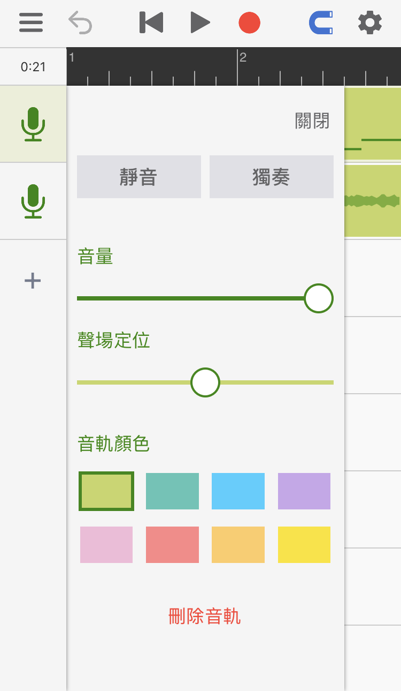
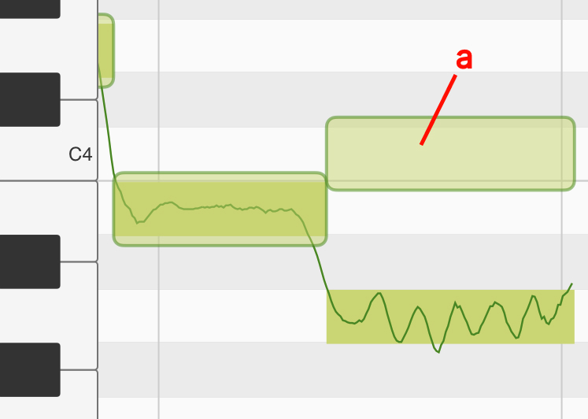
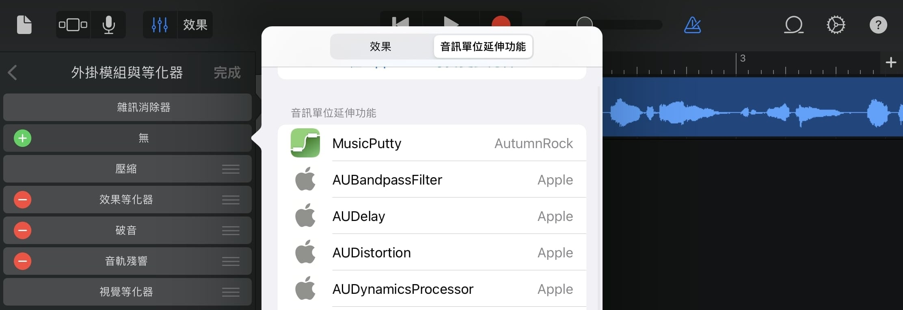
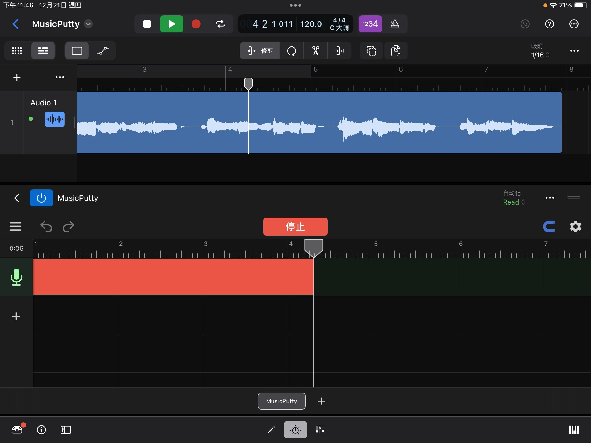

操作指南
音樂黏土是一款強大的音高編輯工具。當使用音樂黏土錄歌時，程序會通過算法分析人聲的音高，並且允許使用者對每一個音符的音高進行修改。音樂粘土在擁有強大功能的同時也擁有簡單的界面和清晰的流程指引，使用者只需要了解了下面兩個程序頁面便可輕鬆使用。
工程頁面
在工程頁面下使用者可以添加音軌、錄製人聲並擺放已經錄好的片段。

1
菜單: 這裡有保存，讀取和導出按鈕。
2
撤消: 使用此按鈕可以撤消對工程文件所做的更改。在較小的屏幕上運行時，長按撤消按鈕會出現恢復按鈕。其它時候，恢復按鈕會出現在撤消按鈕旁邊。
3
指針重置，播放，錄音。
4
對齊網格: 點亮後所拖動的東西會自動對齊網格。
5
設置: 這裡有節拍器、速度、拍子記號和實時監聽的設置。
6
音軌圖標: 點一次會選中此音軌，點兩次可以打開音軌的設置面板。每個音軌的設置面板裡都包含常見的聲道控件，例如靜音/獨奏，音量和聲場定位。同時也可以在這裡改變音軌的顏色。

7
添加音軌: 點這裡可以添加空音軌、伴奏音頻或把人聲音頻文件導入進音樂黏土中分析並修改。 （“導入第三方人聲音頻”的功能需要解鎖專業版本）
8
人聲音頻: 人聲音頻上的微型圖展示了音頻裡所有的音符，雙擊人聲音頻可以進入音高編輯頁面。
9
伴奏音頻: 伴奏音頻會以聲波圖的形式顯示在界面上。
音高編輯頁面
在音高編輯頁面裡你可以對每一個音符的音高進行修改。 （通過雙擊人聲音頻來打開該頁面）

1
有調音符: 方形的輪廓代表音符的大致音高。輪廓裡的線條代表了在每一時刻的精準音高。
2
無調音符: 沒有線條的淺色音符代表無音調的聲音，這些聲音可以是呼吸，混響或環境噪音。
3
主工具: 用來調整音符的音高和音符的起始時間。
4
音符分離工具: 用來切分或合併音符。

4.a
位置標記: 移動它到你需要切割的位置，到位後點擊位置標記（或者上拉）即可把當前音符一分為二。
4.b
合併按鈕（左）: 點擊此處可以讓當前音符和左邊的音符合併。
4.c
合併按鈕（右）: 點擊此處可以讓當前音符和右邊的音符合併。
5
顫音工具（專業版功能）：使用此工具可更改每個音符中的顫音幅度。選擇顫音工具後，你可以在所選音符上向上拖動以放大其顫音或向下拖動以拉平其顫音。

6
連音工具（專業版功能）：選擇了連音工具後，單擊音符將出現一個連音拖扭。使用者可通過拖動此拖鈕來更改音高在兩個音符之間過渡的速度。

6.a
連音托扭: 如需讓兩個音符之間的過渡變慢，將這個手柄向左拖動，如需讓過渡更快，則將手柄向右拖動。
7
聲線工具（專業功能）：此工具可以用來改變人聲的聲線。此處聲線代表的是人聲信號在頻譜上的大致形狀。體型較大的歌手通常會發出低沉的聲音（能量集中在較低頻率的頻譜）。另一方面，身體較小的歌手通常聲音更明亮（能量集中在更高的頻率上）。使用聲線工具，你可以通過重塑人聲在頻譜上的能量分佈來創造新奇的效果。

7.a
聲線塊： 選擇聲線工具後，每個音符上都會出現一個透明的方塊。可通過向上或向下拖動此透明方塊以更改音符的聲線。
插件模式
隨著2.0版本的發布，音樂黏土現在可以作為AUv3插件加載到用戶的音頻工作站（DAW）中。這意味著在製作歌曲時，用戶將無需在DAW和音樂黏土之間反復導入和導出音頻。現在用戶可以直接在DAW的界面中使用音樂黏土的音高編輯工具。
在音頻工作站（DAW）中載入音樂黏土
當在DAW內錄制好人聲後，用戶可以將音樂黏土（MusicPutty）以插件效果器的形式添加到人聲音軌上。以下截圖展示了在GarageBand中如何操作。有關載入插件的說明，請參考DAW的使用者手冊。

當把音樂黏土添加進一條效果器鏈時，請將音樂黏土擺放在靠近效果器鏈開頭的位置。在其前面應該只有用於清理信號的效果器，例如噪聲門或其他降噪插件。這樣可以確保音樂黏土能夠捕捉到原始的幹聲信號，為以後添加其他效果器留下更多可操作的空間。
選擇如何保存插件數據
每當用戶打開一個新的音樂黏土實例時，插件會提示用戶選擇數據的存儲位置。這裡有兩個選擇：將數據儲存在宿主的工程文件中或將其儲存在另一個本地“.mputty”檔案中。音樂黏土推薦使用第一個選項，將數據儲存在宿主的工程文件中。這樣當用戶把作品拷貝到另一個設備上時，用戶只需要移動宿主的工程文件。如果選擇第二個選項，那用戶在拷貝宿主工程文件的同時也需要記得拷貝所有作品中用到的“.mputty”檔案。請注意，除Cubasis外，大部分主流DAW都支持第一個選項。如果你在使用Cubasis，請選擇第二個選項。

從音頻工作站（DAW）中捕捉音訊
在音樂黏土能夠處理用戶的人聲之前，它需要先從宿主中捕捉到人聲的音訊。首先，點擊“捕捉音訊”按鈕讓音樂黏土進入音訊捕捉模式。接著，將宿主的播放指針放置到人聲音訊的開頭，然後按下宿主的播放按鈕。隨著人聲音訊“流過”音樂黏土所在的效果器鏈，音樂黏土會將這些音訊數據保存在其文件中。當捕捉到所有內容後，請點擊“停止”按鈕。

點擊“捕捉音訊”按鈕讓音樂黏土進入音訊捕捉模式。

將宿主的播放指針放置到人聲音訊的開頭，然後按下宿主的播放按鈕。當捕捉到所有內容後，請點擊“停止”按鈕。

音樂黏土會自動分析被捕捉音訊的音高，分析完成後就可開始調音了。
在不同音頻工作站（DAW）中需要注意的事項
當一個iOS上的音頻插件需要和它的宿主進行交流時，程序之間會使用一個叫做Audio Unit v3（AUv3）的協議進行溝通。雖然大部分宿主都表明自己支持AUv3協議，但在實踐中，每個宿主對AUv3協議的解讀都略有不同。因此針對不同宿主，這裡有一些需要提前了解的注意事項。
Garageband & Logic Pro
Garageband和Logic Pro對何時一個效果器能夠輸出音訊設有嚴格的限制。如果宿主在它的一個音軌上沒有看到任何音訊，宿主會自動停止該音軌上的所有效果器。這就意味著當你在音樂黏土中移動或導入音訊時，你必須確保該音訊同時也存在於宿主的時間軸上，並被放在相同位置。否則，宿主可能會誤以為當前播放指針所處的位置沒有任何東西需要播放，並停止從音樂黏土中調取音訊。
Cubasis
在Cubasis中，當音樂黏土提示用戶選擇數據存儲位置時，請務必選擇“儲存在另一個本機檔案中”。目前由於Cubasis的設計中存在的一些限制，其系統只支持10MB以下的插件存檔。我們已經向Cubasis團隊傳達了這個問題，並將繼續與他們溝通，希望未來可以找到一個更好的解決方案。
Auria & Auria Pro
目前Auria的導出功能中存在一個Bug。導出時，Auria不會按照AUv3協議的要求給其插件提供宿主的指針信息，導致任何需要指針信息的效果器都無法在Auria上正常導出。想要繞過這個問題，請首先使用音樂黏土的內置導出功能將其項目導出為音訊文件，並將導出的音訊文件放置到Auria的音軌上。然後，在導出Auria工程前，靜音所有音樂黏土的插件實例。我們已經向Auria團隊傳達了這個問題，並將繼續與他們溝通，希望未來可以修復這個問題。
N-Track Studio
N-Track Studio有時會向插件提供不准確的指針信息。在N-Track Studio裡捕捉音訊時，請將音樂黏土的音訊捕捉模式設置為“兼容模式”。否則，音樂黏土可能會將那些不准確的信息解讀為宿主播放指針的跳躍，並導致其過早停止音訊捕捉。